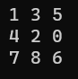

NxN Sliding Puzzle Solver

A collection of various NxN Sliding Puzzle solvers written in C++ for a university class. Search algorithms used include: Breadth-First Search, Depth-First Search and A* Search.
About the programsA collection of various NxN Sliding Puzzle solvers written in C++ for a university class. Search algorithms used include: Breadth-First Search, Depth-First Search and A* Search.
About the programsHover the image to play the sample run
The first algorithm used was Breadth-First search. This implementation uses 2 vectors. One is used like a queue to store the 'open' puzzle states while the other is used to store the states that have been closed or visited. If a node is not the goal node and it has not already been closed, that puzzle state is expanded, meaning every possible child state of that state is put on the open vector. Otherwise, the path from the initial state to the goal state is traced, put on a solution vector and then returned at the very end.
The second algorithm used was Depth-First search. Similarily to the Breadth-First Search, this implementation uses 2 vectors. a stack to store the 'open' puzzle states while the other is used However, the open vector is implemented like a stack where the last element that was inserted is checked for expansion first. Otherwise, the algorithm functions identically to the BFS.
The final algorithm used was A* search. The algorithm for this search was roughly the same as the others but the container for the open list was implemented as a STL priority_queue and a state was defined as having higher priority than another based on the number of moves it was from the solution state.
Since the programs were made for a university course, the repository is private. If you would like to access the full repo, feel free to contact me
A portion of the DFS algorithm, this part expands the current puzzle state node and creates the solution path vector. The other algorithms are simular with some minute differences
Or email me at: jontheruiz4@gmail.com